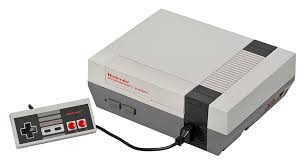
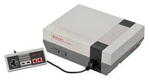

Childhood Memories With The NES
Gaming in the late 80's and early 90's
Gaming in the late 80's and early 90's

One of my earliest memories is of being at my cousin's house and playing Nintendo. I can't recall just how old I was at the time but I must have been four or five. We played Super Mario Bros and I remember being dazzled by the sounds, colors, the movement, and excitement of the game. Of course at that age I couldn't analyze those feelings but all I knew is that I really had to have an NES. When it was time to go for the evening I remember crying and throwing a fit because I wanted to play more Nintendo (not my finest moment). It would be some time after that before I could enjoy a NES of my own but in the meantime my parents bought my brother and I a...

So my parents ended up getting my brother and I a Sega Master System. For those unfamiliar, it was an 8-bit system developed by Sega that preceded the Sega Genesis. It was a fine console and my brother and I had fun with it. I remember playing the first Y's game. It was cool and mystifying but I didn't understand how rpgs worked at that young age(also, Y's had a peculiar combat system). I never got very far. Even though I had fun with Master System, I still envied everyone that had a Nintendo. Today, however, I wish I still had my original console.